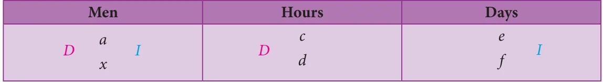
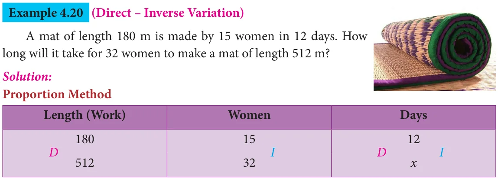
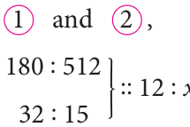
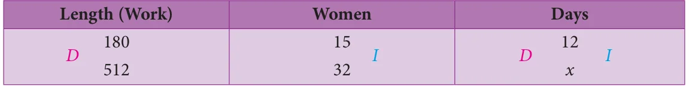
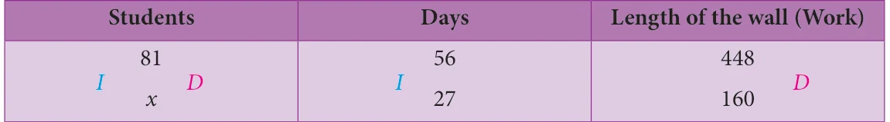

Before we could learn about compound variation, let us recall the concepts on direct and inverse proportions.
If two quantities are such that an increase or decrease in one quantity makes a corresponding increase or decrease (same effect) in the other quantity, then they are said to be in direct proportion or said to vary directly. In other words, \(x\) and \(y\) are said to vary directly if \(y = kx\) always, where \(k\) is called the proportionality constant and \(k > 0\) assuming that \(y\) depends on \(x\) and so \(k = \frac{y}{x}\).
For example, let us assume that one of you plan to give 2 pens to each of your friends in the birthday party. Then the number of pens to be bought will be in direct proportion with the number of friends who will attend the party. Isn't it? The following table will help you understand this clearly.

In this case, we find that the proportionality constant, \(k = \frac{y}{x} = \frac{2}{1} = \frac{4}{2} = \frac{10}{5} = \frac{24}{12} = \frac{30}{15} = 2\).
Few more examples of Direct Proportion:
- Distance – Time (under constant speed): If the distance increases, then the time taken to reach that distance will also increase and vice- versa.
- Purchase – Spending: If the purchase on utilities for a family during the festival time increases, then the spending limit also increases and vice versa.
- WorkTime – Earnings: If the number of hours worked is less, then the pay earned will also be less and vice-versa.
Similarly, if two quantities are such that an increase or decrease in one quantity makes a corresponding decrease or increase (opposite effect) in the other quantity, then they are said to be in inverse (indirect) proportion or said to vary inversely. In other words, \(x\) and \(y\) are said to vary inversely, if \(xy = k\) always, where \(k\) is called proportionality constant and \(k > 0\).
For example, let us assume that a class of 30 students in a school walks on streets in a village for health awareness campaign in an orderly manner, then we can see an inverse proportion in the number of rows and columns they walk. The following table will help you understand this clearly.

We can map a few of these arrangements as (5 rows/6 columns) and (6 rows/5 columns) and see the opposite variations in rows and columns.
In this case, we find that the proportionality constant, \(k\) is 30.
Few more examples of Inverse Proportion:
- Price – Consumption: If the price of consumable products increases, then naturally its consumption will decrease and vice-versa.
- Workers – Time: If more workers are employed to complete a work, then the time taken to complete the work will be less and vice-versa.
- Speed – Time (Fixed Distance): If we travel with less speed, then the time taken to cover a given distance will be more and vice-versa.
Now, use the concept of direct and inverse proportions and try to answer the following questions:
Try these
- Classify the given examples as direct or inverse proportion:
- Weight of pulses to their cost.
- Distance travelled by bus to the price of ticket.
- Speed of the athelete to cover a certain distance.
- Number of workers employed to complete a construction in a specified time.
- Area of a circle to its radius.
- A student can type 21 pages in 15 minutes. At the same rate, how long will it take the student to type 84 pages?
- If 35 women can do a piece of work in 16 days, in how many days will 28 women do the same work?
Let us now see what a Compound Variation is? There will be problems which may involve a chain of two or more variations in them. This is called as Compound Variation. The different possibilities of two variations are:
Direct-Direct, Direct-Inverse, Inverse-Direct, Inverse-Inverse.
Note
There are situations where neither direct proportion nor indirect proportion can be applied. For example, if one can see a parrot at a distance through one eye, it does not mean that he can see two parrots at the same distance through both the eyes. Also, if it takes 5 minutes to fry a vadai, it does not mean that it will take 100 minutes to fry 20 vadais!
Let us now solve a few problems on compound variation. Here, we compare the known quantity with the unknown (\(x\)). There are a few methods in practice by which problems on compound variation are solved. They are given as follows:
4.5.1 Proportion Method
In this method, we shall compare the given data and find whether they are in direct or inverse proportion. By finding the proportion, we can use the fact that
the product of the extremes = the product of the means
and get the value of the unknown (\(x\)).
4.5.2 Multiplicative Factor Method
Illustration:

Here, the unknown (\(x\)) is in men and so it is compared to the known, namely hours and days. If men and hours are in direct proportion (\(D\)), then take the multiplying factor as \(\frac{d}{c}\) (take the reciprocal). Also, if men and days are in inverse proportion (\(I\)), then take the multiplying factor as \(\frac{e}{f}\) (no change). Thus, we can find the unknown (\(x\)) in men as \(x = a \times \frac{d}{c} \times \frac{e}{f}\).
4.5.3 Formula Method
Identify the data from the given statement as Persons (P), Days (D), Hours (H) and Work (W) and use the formula,

where the suffix 1 contains the complete data from the first statement of the given problem and the suffix 2 contains the unknown data to be found out in the second statement of the problem. That is, this formula says, \(P_1\) men doing \(W_1\) units of work in \(D_1\) days working \(H_1\) hours per day is the same as \(P_2\) men doing \(W_2\) units of work in \(D_2\) days working \(H_2\) hours per day. Identifying the work \(W_1\) and \(W_2\) correctly is more important in these problems. This method will be easy for finding the unknown (\(x\)) quickly.
Example 4.19 (Direct – Direct Variation)
If a company pays ₹6 lakh for 15 workers for 20 days, how much would it need to pay for 5 workers for 12 days?
Solution:
Proportion Method

Here, the unknown is the pay (\(x\)). It is to be compared with the workers and the days.
Step 1:
Here, less days means less pay. So, it is in direct proportion.
\(\therefore\) The proportion is \(20 : 12 :: 6 : x \quad \longrightarrow \textcircled{1}\)
Step 2:
Also, less workers means less pay. So, it is in direct proportion again.
\(\therefore\) The proportion is \(15 : 5 :: 6 : x \quad \longrightarrow \textcircled{2}\)
Step 3:
Combining \(\textcircled{1}\) and \(\textcircled{2}\),

We know that, the product of the extremes = the product of the means
So, \(20 \times 15 \times x = 12 \times 6 \times 5 \Rightarrow x = \frac{12 \times 6 \times 5}{20 \times 15} =\) ₹1.2 lakh.
Multiplicative Factor Method
Here, the unknown is the pay (\(x\)). It is to be compared with the workers and the days.
Step 1:
Here, less days means less pay. So, it is in direct proportion.
\(\therefore\) The multiplying factor is \(\frac{12}{20}\) (take the reciprocal).
Step 2:
Also, less workers means less pay. So, it is in direct proportion again.
\(\therefore\) The multiplying factor is \(\frac{5}{15}\) (take the reciprocal).
Step 3:
\(\therefore x = 6 \times \frac{12}{20} \times \frac{5}{15} =\) ₹1.2 lakh.
Formula Method
Here, \(P_1 = 15\), \(D_1 = 20\) and \(W_1 = 6\). Also, \(P_2 = 5\), \(D_2 = 12\) and \(W_2 = x\)
Using the formula, \(\frac{P_1 \times D_1}{W_1} = \frac{P_2 \times D_2}{W_2}\)
\(\Rightarrow \frac{15 \times 20}{6} = \frac{5 \times 12}{x}\)
\(\Rightarrow x = \frac{5 \times 12 \times 6}{15 \times 20} =\) ₹1.2 lakh.

Here, the unknown is the days (\(x\)). It is to be compared with the length and the women.
Step 1:
Here, more length means more days. So, it is in direct proportion.
\(\therefore\) The proportion is \(180 : 512 :: 12 : x \quad \longrightarrow \textcircled{1}\)
Step 2:
Also, more women means less days. So, it is in inverse proportion.
\(\therefore\) The proportion is \(32 : 15 :: 12 : x \quad \longrightarrow \textcircled{2}\)
Step 3:
Combining \(\textcircled{1}\) and \(\textcircled{2}\),

We know that, the product of the extremes = the product of the means
So, \(180 \times 32 \times x = 512 \times 12 \times 15 \Rightarrow x = \frac{512 \times 12 \times 15}{180 \times 32} = 16\) days.
Multiplicative Factor Method

Here, the unknown is the days (\(x\)). It is to be compared with the length and the women.
Step 1:
Here, more length means more days. So, it is in direct proportion.
\(\therefore\) The multiplying factor is \(\frac{512}{180}\) (take the reciprocal).
Step 2:
Also, more women means less days. So, it is in inverse proportion.
\(\therefore\) The multiplying factor is \(\frac{15}{32}\) (no change).
Step 3:
\(\therefore x = 12 \times \frac{512}{180} \times \frac{15}{32} = 16\) days.
Formula Method:
Here, \(P_1 = 15\), \(D_1 = 12\) and \(W_1 = 180\) and \(P_2 = 32\), \(D_2 = x\) and \(W_2 = 512\)
Using the formula, \(\frac{P_1 \times D_1}{W_1} = \frac{P_2 \times D_2}{W_2}\)
\(\Rightarrow \frac{15 \times 12}{180} = \frac{32 \times x}{512}\)
\(\Rightarrow 1 = \frac{32 \times x}{512} \Rightarrow x = \frac{512}{32} = 16\) days.
Remark: Students may answer in any of the three given methods dealt here.
Try these
- If \(x\) and \(y\) vary directly, find \(k\) when \(x = y = 5\).
- If \(x\) and \(y\) vary inversely, find the constant of proportionality when \(x = 64\) and \(y = 0.75\)
Activity
Draw a circle of a given radius. Then, draw its radii in such a way that the angles between any two consecutive pair of radii are equal. Start drawing 3 radii and end with drawing 12 radii in the circle. List and prepare a table for the number of radii to the angle between a pair of consecutive radii and check whether they are in inverse proportion. What is the proportionality constant?
Example 4.21 (Inverse – Direct Variation)
If 81 students can do a painting on a wall of length 448 m in 56 days, then how many students can do the painting on a similar type of wall of length 160 m in 27 days?
Solution:
Multiplicative Factor Method

Here, the unknown is the students (\(x\)). It is to be compared with the days and the length of the wall.
Step 1:
Here, less days means more students. So, it is in inverse proportion.
\(\therefore\) The multiplying factor is \(\frac{56}{27}\).
Step 2:
Also, less length means less students. So, it is in direct proportion.
\(\therefore\) The multiplying factor is \(\frac{160}{448}\).
Step 3:
\(\therefore x = 81 \times \frac{56}{27} \times \frac{160}{448}\)
\(x = 60\) students.
Formula Method
Here, \(P_1 = 81\), \(D_1 = 56\) and \(W_1 = 448\) and \(P_2 = x\), \(D_2 = 27\) and \(W_2 = 160\)
Using the formula, \(\frac{P_1 \times D_1}{W_1} = \frac{P_2 \times D_2}{W_2}\)
\(\Rightarrow \frac{81 \times 56}{448} = \frac{x \times 27}{160}\)
\(\Rightarrow x = \frac{81 \times 56}{448} \times \frac{160}{27} \Rightarrow x = 60\) students.
Example 4.22 (Inverse – Inverse Variation)
If 48 men working 7 hours a day can do a work in 24 days, then in how many days will 28 men working 8 hours a day can complete the same work?
Solution:
Multiplicative Factor Method

Here, the unknown is the days (\(x\)). It is to be compared with the men and the hours.
Step 1:
Here, less men means more days. So, it is in inverse proportion.
\(\therefore\) The multiplying factor is \(\frac{48}{28}\).
Step 2:
Also, more hours means less days. So, it is in inverse proportion again.
\(\therefore\) The multiplying factor is \(\frac{7}{8}\).
Step 3:
\(\therefore x = 24 \times \frac{48}{28} \times \frac{7}{8} = 36\) days.
Formula Method
Here, \(P_1 = 48\), \(D_1 = 24\), \(H_1 = 7\) and \(W_1 = 1\) (Why?)
\(P_2 = 28\), \(D_2 = x\), \(H_2 = 8\) and \(W_2 = 1\) (Why?)
Using the formula, \(\frac{P_1 \times D_1 \times H_1}{W_1} = \frac{P_2 \times D_2 \times H_2}{W_2}\)
\(\Rightarrow \frac{48 \times 24 \times 7}{1} = \frac{28 \times x \times 8}{1}\)
\(\Rightarrow x = \frac{48 \times 24 \times 7}{28 \times 8} = 36\) days.
Try these
Identify the different variations present in the following questions:
- 24 men can make 48 articles in 12 days. Then, 6 men can make \(\underline{\qquad}\) articles in 6 days.
- 15 workers can lay a road of length 4 km in 4 hours. Then, \(\underline{\qquad}\) workers can lay a road of length 8 km in 8 hours.
- 25 women working 12 hours a day can complete a work in 36 days. Then, 20 women must work \(\underline{\qquad}\) hours a day to complete the same work in 30 days.
- In a camp there are 420 kg of rice sufficient for 98 persons for 45 days. The number of days that 60 kg of rice will last for 42 persons is \(\underline{\qquad}\).